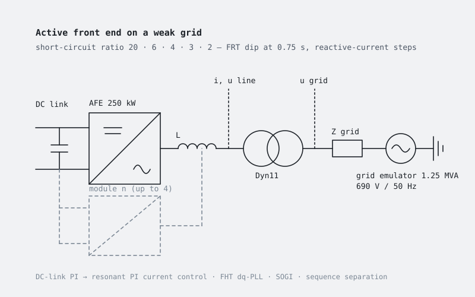

Active front end on weak grids and grid-forming control
How a grid-tied active front end behaves on progressively weaker grids, with fault-ride-through tests and reactive-current steps, as the starting point for grid-forming control architectures.

What it is
Grid-following converters rely on a stiff grid voltage to synchronise to; as the short-circuit ratio drops, the interaction between the PLL, the current control and the grid impedance degrades stability. This bench reproduces that behaviour with three-phase AFE modules connected to an emulated grid through a Dyn11 transformer, and is the reference against which the grid-forming control laws are developed.
The committed configuration runs one 250 kW module; up to four modules in parallel are parameterised, with per-module current references, common-mode compensation for hard paralleling, and individual clocks and PWM phase shifts.
Control and tests
- DC-link voltage PI over resonant PI current control, gains tuned for weak grids; FHT-based dq-PLL, SOGI, positive- and negative-sequence handling.
- Fault-ride-through layer active: voltage dip at 0.75 s (asymmetric fault type 1) followed by two reactive-current steps at cos φ = 0.95.
run_sim.mruns the model for five grid strengths, short-circuit ratio 20, 6, 4, 3 and 2; plotting and video scripts produce the grid and line quantities around the fault and the sequence powers.
Status
The parameter file configures a grid-following AFE (PLL, resonant PI current control); the grid-forming control law under investigation lives inside the model and is not exposed as parameters yet.